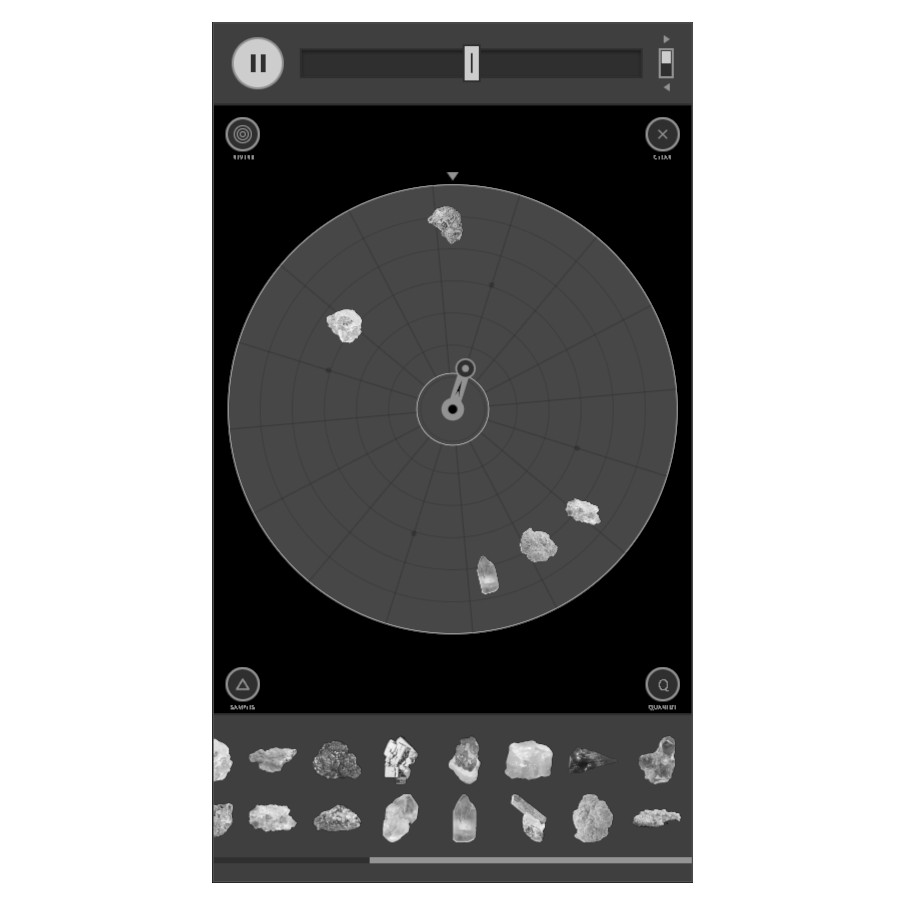

VLADISLAV GENERALOV
klad mineralov (web)
2026

Six years after creating klad mineralov I decided to make a digital version of it to play funny sequences straight from my phone browser.
You can place minerals anywhere on a spinning disc and they will sound each time they pass the playhead. There is no grid, so the stones can lie wherever you like, but you can still turn on quantization to 16 slots. Or even place the stones automatically, dividing the circle into 1 to 16 equal parts to create Euclidean rhythms.
Each of the 22 minerals carries its own sample, which you can re-record. Samples can be trimmed, reversed and pitched.
Change the tempo and spin direction, add reverb, have fun!